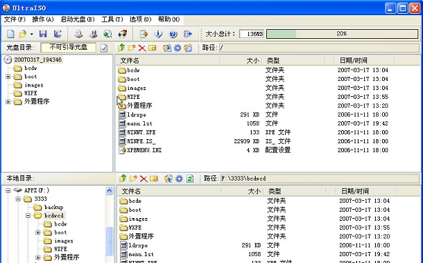
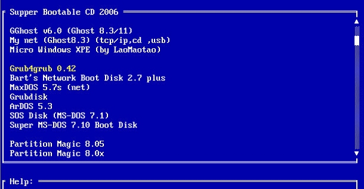
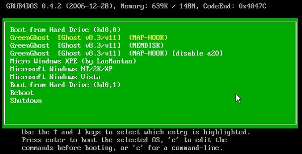

2 grub4dos初级教程－应用篇
2.2 光盘上的应用
2.2.2 BCDW引导GRUB的可启动光盘
此法是用BCDW制作启动光盘，通过BCDW执行grldr来加载menu.lst菜单。
步骤：
1) 首先下载BCDW软件包，解压后获取所需文件。
2）组织文件。比如在E:\3333下建个bcdwcd目录，此目录下文件将在光盘根目录下，下面建boot\grub目录和bcdw目录，把软件包中bcdw目录下的bcdw.bin，bcdw.ini和loader.bin拷贝到所建的bcdwcd\bcdw目录下；把grldr、各种img、字体等文件拷贝到bcdwcd\boot\grub目录。menu.lst文件的编辑方法与上面2.1中介绍的相同。
3) 编辑bcdw.ini文件。打开bcdw.ini，找到[MenuItems]部分，比如：
| [MenuItems] |
|
| C:\ |
; Boot from drive C: |
| \I386\setupldr.bin |
; Microsoft Windows XP Setup |
上面的就是BCDW启动菜单的例子。在其中加上grub等项，变成：
| [MenuItems] |
|
|
|
| \images\gghost.img |
; GGhost v6.0 (Ghost8.3/11) |
| \images\mynet.img |
; My net (Ghost8.3)(tcp/ip,cd/usb) |
| \boot\grub\grldr |
; Grub4dos |
| \WXPE\SETUPLDR.BIN |
; Micro Windows XPE (by LaoMaotao) |
| C:\ |
; Boot from drive C: |
| \I386\setupldr.bin |
; Microsoft Windows XP Setup |
4）制作ISO文件与刻录ISO的方法与2.1中的基本相同。所不同的只是在制作ISO文件时，要把loader.bin（或bcdw.bin）作为ISO的引导文件。【图13】

也可使用mkisofs.exe或CDIMAGE.EXE等工具制作启动iso。
比如我用CDIMAGE制作iso的批处理是：
cdimage -lbcdwcd -t01/01/2007,00:00:00 -h -n -d -o -m -bload.bin bcdwcd bcdwcd.iso
运行后bcdw界面与grub界面的效果如下图。【图14】【图15】

